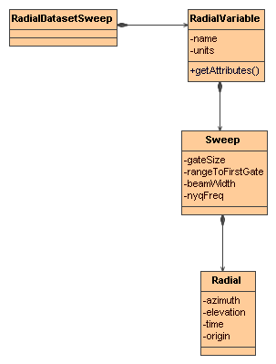

Radial Datatype uses polar coordinates (elevation, azimuth, distance) to describe the location of its points in space, and it is referred as Radial Coordinate System. A Radial Coordinate System has a Elevation, Azimuth, and Distance coordinate axis. It may also has a Time coordinate axis. Generally, in our level II and level III radar products, there is a time variable at radial (elevation, azimuth), or sweep (elevation) level, so it is considered as a variable, rather than coordinate axis.
A RadialDatasetSweep has a collection of Radial Variables. The data in each Variable is organized into sweeps. A sweep is a connected set of radials. All the radials in a sweep are assumed to have the same number of gates and the same beam width and nyquist frequency. A radial is a set of data sampled along a straight line at constant intervals called the gate size. The radial's geometry is described by an elevation and azimuth angles relative to some origin.
A RadialDatasetSweep is a NetcdfDataset whose Radials have been identified and grouped into Sweeps based on Radial Coordinate Systems. Here is the UML for the RadialDatasetSweep interface classes, found in the ucar.nc2.dt package:

The general way to open a RadialDataset is to use FeatureDatasetFactoryManager
Formatter errlog = new Formatter();
FeatureDataset fdataset = FeatureDatasetFactoryManager.open(FeatureType.RADIAL, location, null, errlog);
if (fdataset == null) {
log.error("**failed on {} %n --> {} %n", location, errlog);
return null;
}
FeatureType ftype = fdataset.getFeatureType();
assert (ftype == FeatureType.RADIAL);
RadialDatasetSweep radialDataset = (RadialDatasetSweep) fdataset;
TypedDatasetFactory
wraps three RadialDatasetSweep classes: ucar.nc2.dt.radial.Nids2Dataset,
ucar.nc2.dt.radial.LevelII2Dataset, and ucar.nc2.dt.radial.Dorade2Dataset.
It opens a radial dataset with an appropriate class, and can be
extended to cover more radial products.
If
the radar is stationary, isStationary() returns true, and getCommonOrigin()
returns the earth location of radar. If the radar product has more
than one sweep, isVolume() will return 1. The getDataVariables
returns the list of variables, for each variable, getNumSweeps(),
getSweep(int sweepNum), and readAllData() is used to
handle the data variable at the sweep level, inside each sweep, getRadialNumber(),
getGateNumber(),
getElevation(int
radial), getTime(int radial), and readData(int radial)
returns all information associated with the radial object.
private void showInfo(RadialDatasetSweep rds, String varName, Formatter f) {
f.format("Radial Dataset %s%n", rds.getLocation());
/* radar information */
String stationID = rds.getRadarID();
String stationName = rds.getRadarName();
boolean isVolume = rds.isVolume();
f.format(" stationName = %s%n", stationName);
f.format(" isVolume = %s%n", isVolume);
/* radial variable */
RadialDatasetSweep.RadialVariable v = (RadialDatasetSweep.RadialVariable) rds.getDataVariable(varName);
f.format(" info for variable = %s%n", varName);
f.format(" number of sweeps = %d%n", v.getNumSweeps());
// loop over sweeps
for (int sweep = 0; sweep < v.getNumSweeps(); sweep++) {
RadialDatasetSweep.Sweep sw = v.getSweep(sweep);
float me = sw.getMeanElevation();
int nrays = sw.getRadialNumber();
int ngates = sw.getGateNumber();
f.format(" %d : elev=%f nrays=%d ngates=%d%n", sweep, me, nrays, ngates);
try {
for (int j = 0; j < nrays; j++) {
float azi = sw.getAzimuth(j);
float ele = sw.getElevation(j);
float[] data = sw.readData(j);
f.format(" %d : azimuth=%f elev=%f data len=%d%n", j, azi, ele, data.length);
}
} catch (IOException e) {
e.printStackTrace();
}
}
}


 This document was last updated July 2013
This document was last updated July 2013